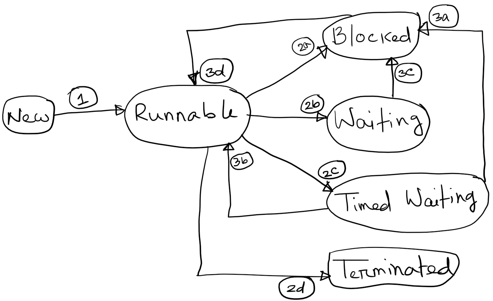
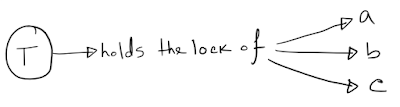
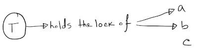
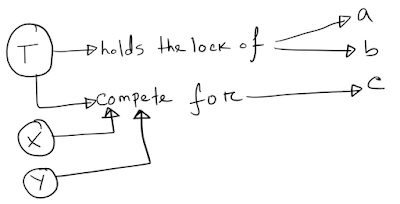

Introduction Link to heading
In Java, threads can have States. The Thread.State enum defines the different states that a Java thread can have. This enum defines the following values -
- NEW
- RUNNABLE
- BLOCKED
- WAITING
- TIMED_WAITING
- TERMINATED
In the subsequent sections I will provide a brief overview of these states along with possible transitions between them.
States of a Java Thread Link to heading
NEW Link to heading
This is the default state a thread gets when it is first created.
RUNNABLE Link to heading
As soon as a thread starts executing, it moves to the RUNNABLE state.
Note that a thread that is waiting to acquire a CPU for execution is still considered to be in this state.
BLOCKED Link to heading
A thread moves to the BLOCKED state as soon as it gets blocked waiting for a monitor lock. This can happen in one of the following two ways -
- It’s waiting to acquire a lock to enter a synchronised block/method.
- It’s waiting to reacquire the monitor lock of an object on which it invoked the Object.wait method.
WAITING Link to heading
A thread moves to this state as a result of invoking one of the following methods -
- Object.wait without a timeout
- Thread.join without a timeout
- LockSupport.park
TIMED_WAITING Link to heading
A thread moves to this state as a result of invoking one of the following methods -
- Thread.sleep
- Object.wait with a timeout
- Thread.join with a timeout
- LockSupport.parkNanos
- LockSupport.parkUntil
TERMINATED Link to heading
As soon as a thread terminates, it moves to this state.
Possible state transitions Link to heading
The following diagram shows the possible transitions between different states -

As soon as a thread gets scheduled for execution, it moves to the RUNNABLE state. This transition has been shown with the first arrow (marked as 1).
From the RUNNABLE state, a thread can move to any of the BLOCKED, WAITING, TIMED_WAITING, or TERMINATED state. Theoretically speaking, if a thread does not wait to acquire any lock, or does not sleep, or does not invoke any of the methods which makes it wait, it just finishes its execution and directly goes to the TERMINATED state (marked as 2d).
Of course in a practical application, the above scenario is highly unlikely. Often a thread tries to acquire a lock, in which case it moves to the BLOCKED (marked as 2a) state if it has to wait for the lock. Threads also explicitly wait for some preconditions to be true/actions from other threads, in which case they move to the WAITING (marked as 2b) or the TIMED_WAITING (marked as 2c) state, depending on whether the waits were timed or not.
Once a thread moves to the BLOCKED state, the only possible transition that is allowed next is to move to the RUNNABLE state (marked as 3d).
Similarly, the only possible transition from the WAITING state is to move to the BLOCKED state (marked as 3c).
Please note that some of the articles on the internet incorrectly adds a transition from the WAITING to the RUNNABLE state. This is just not correct. A thread can never move to the RUNNABLE state from the WAITING state directly. We can understand the reason for this with an example.
Suppose that we have a thread T which is currently in the RUNNABLE state and holds the monitor lock of three objects a, b, and c, as shown in the diagram below -

At this point, T invokes c.wait(), after which it no longer holds the monitor lock of object c -

As soon as T is notified using an invocation of notify/notifyAll, it stops waiting and competes with other threads (let’s say, X and Y) to acquire the monitor lock of c -

which, according to the definitions above, is the BLOCKED state. Only after acquiring the monitor lock of c, T moves to the RUNNABLE state. Similar reasoning can be applied for the Thread.join() (which internally uses Object.wait()) and LockSupport.park().
Let’s get back to our original state transition diagram. As we can see, a thread can move to either the RUNNABLE (marked as 3b) or the BLOCKED (marked as 3a) state from the TIMED_WAITING state. The transition to RUNNABLE is possible in this case because a thread can enter the TIMED_WAITING state after invoking the Thread.sleep method, in which case it retains all the monitor locks it currently holds.
As a thread finishes execution after moving back and forth between the RUNNABLE, BLOCKED, WAITING or TIMED_WAITING state, it moves to the TERMINATED state once and for all.
How do we get the current state of a Thread? Link to heading
We can use the Thread.getState() method to retrieve the current state of a thread. We can use this value to monitor or debug any concurrency issues that our application might face in production.
Conclusion Link to heading
In this article we briefly reviewed different states a Java thread can have, and how a thread moves between these states. As always, any feedback/improvement suggestions/comments is highly appreciated!